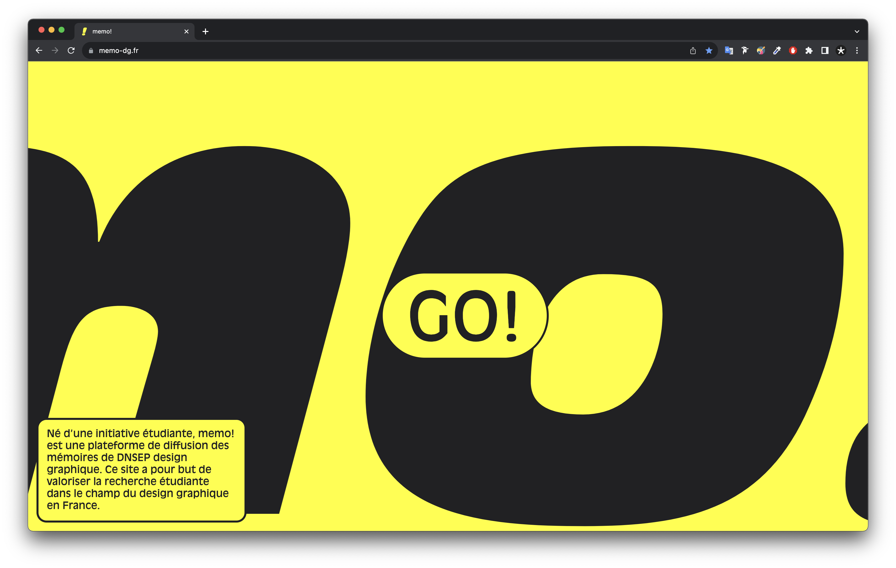

-
memo!
— Web design et développement/Conception éditoriale/Mise en espace/Affiche

-
Cros & Leclercq architectes
— Web design et développement/Edition
-
Le nouveau printemps
— Programmation murale
-
Biosylva
— Identité graphique/Packaging/Pictogramme
-
Molto
— Identité graphique/Mise en espace
-
Il faut qu’une porte soit ouverte ou fermée
— Scénographie
-
Artysane
— Identité graphique/Web design et développement
-
Vu à 130
— Conception éditoriale
-
Les vases de Valentine
— Conception éditoriale
-
Balade architecturale en Languedoc Roussillon
— Conception éditoriale
-
Bienvenue à Villefranche
— Web design et développement
-
Port Leucate, l’utopie comme héritage
— Affiche
-
Hello map
— Web design et développement